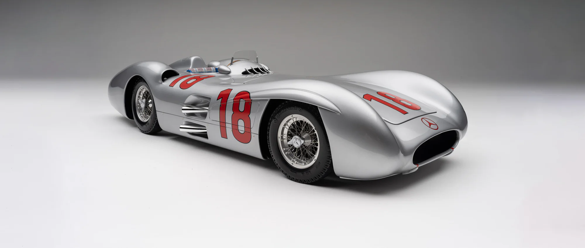
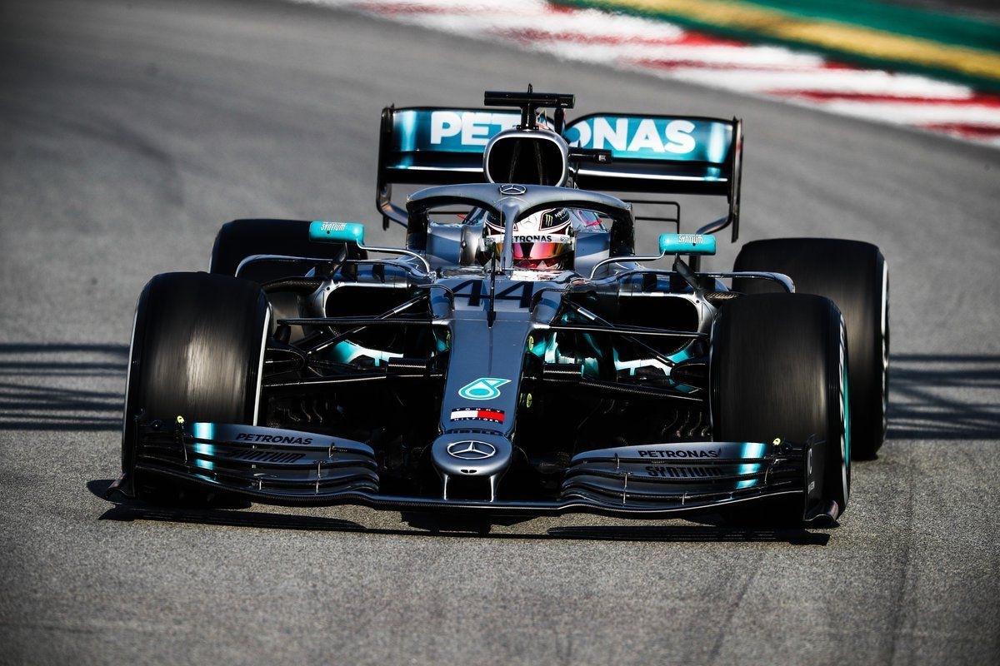
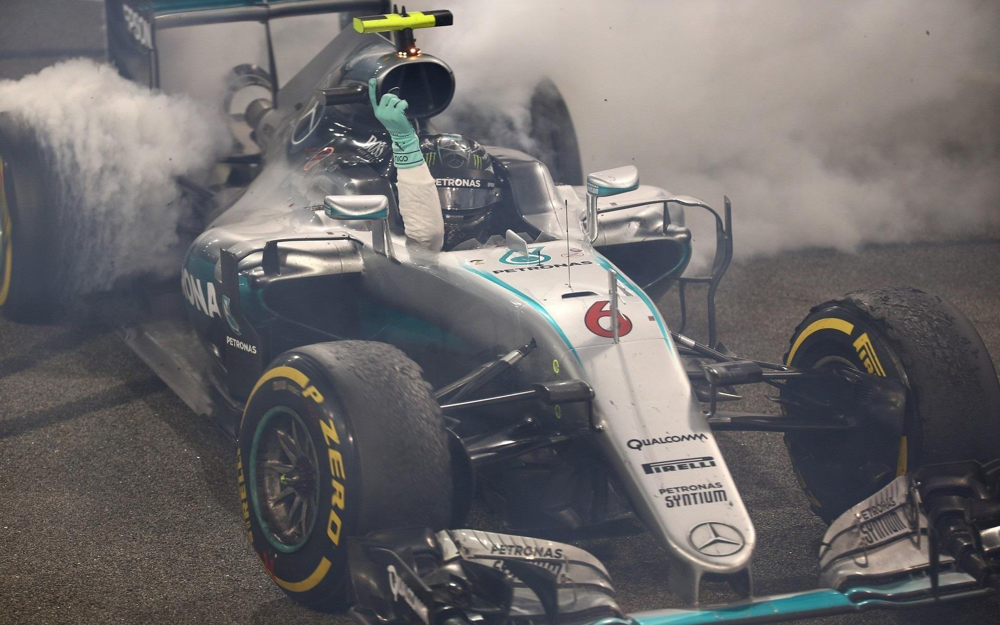

Mercedes W196 Streamliner, 1954 – a legendás első korszak autója, amellyel Fangio bajnok lett
A csapat rövid története
A Mercedes-Benz motorsport-múltja egészen az 1900-as évek elejéig nyúlik vissza. Az F1-ben először 1954–55-ben szerepeltek, Juan Manuel Fangio-val az élen, aki mindkét szezonban bajnoki címet szerzett. Ezután évtizedekig motorbeszállítóként (McLaren) voltak jelen.
2010-ben tértek vissza gyári csapatként, megvásárolva a Brawn GP-t. Az első három szezon inkább fejlesztési időszak volt – az igazi dominancia 2014-ben robbant be a turbó-hibrid korszak nyitásával.

Lewis Hamilton a Mercedes W10-essel a barcelonai teszten, 2019

Nico Rosberg – a 2016-os világbajnok a Mercedessel
Pilótái és technikai sikerek
A 2014-es szezonban bevezetett 1,6 literes turbó-hibrid erőforrás terén a Mercedes óriási előnyre tett szert versenytársaival szemben. A W05-től a W12-ig tartó autócsalád sorban nyerte a bajnokságokat.
A 2022-es visszaesés
A 2022-es technikai forradalom (ground effect aerodinamika) visszafogta a Mercedest. A W13-at jellegzetes „porpoising" (pattogó) probléma gyötörte, és a Red Bull vette át az uralmat. 2023–24-ben sem sikerült visszaszorítani Max Verstappen dominanciáját.
„Az 1,6 literes hibrid motor volt a modern F1 legfontosabb technikai vívmánya – és a Mercedes ezt tökéletesre fejlesztette."